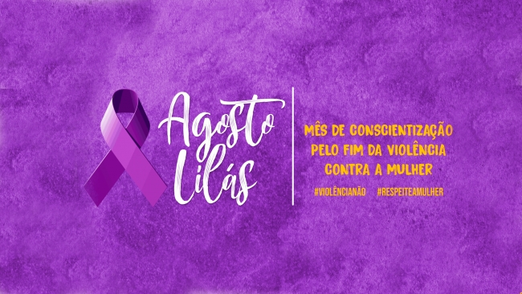

a volincia contra a mulher é um poblema grave e real que acontece todo os dias muitas vezes acontece dentro de casa e é solenciosa escondida,ignorada. precisamos falar sobre isso e combater todas as formas de violencia
existem diferentes tipos de violencia: fisica, piscologica,moral, sexual e patrimonial. todas são grave e causa muito sofrimento.
denunciar é um ató de coragem. se você presenciar ou sofrer violencia procure ajuda.
Disque 180 - centarl de atendimento á mulher. funciona 24hrs,é gratuito e anonimo.
